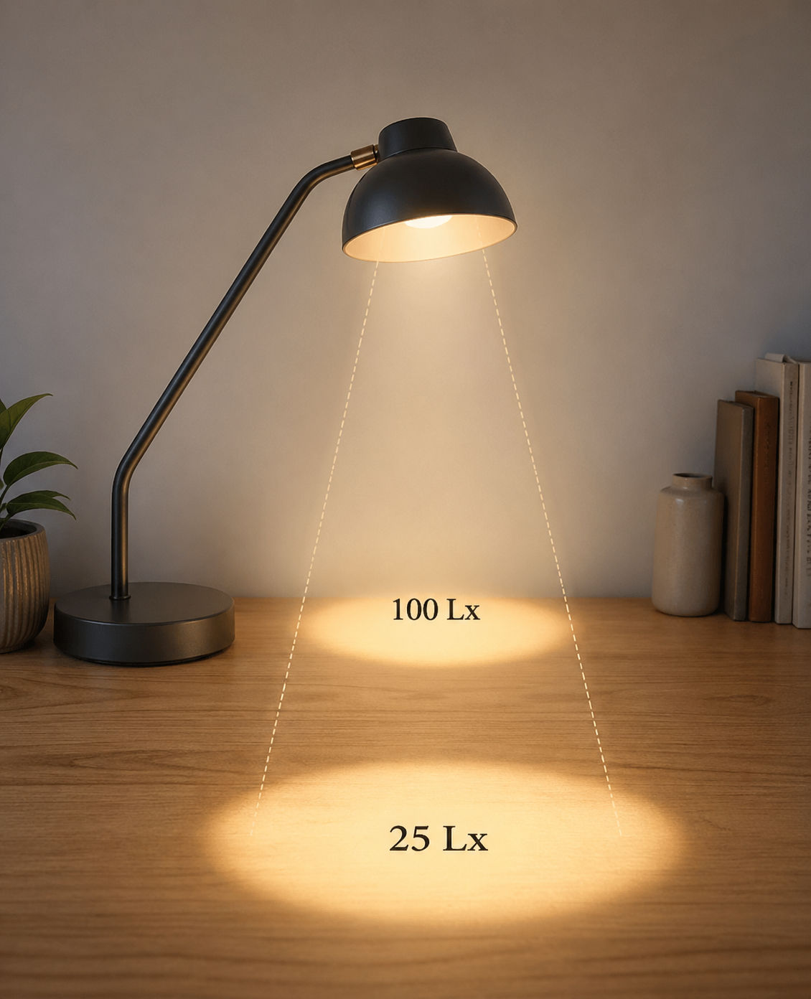
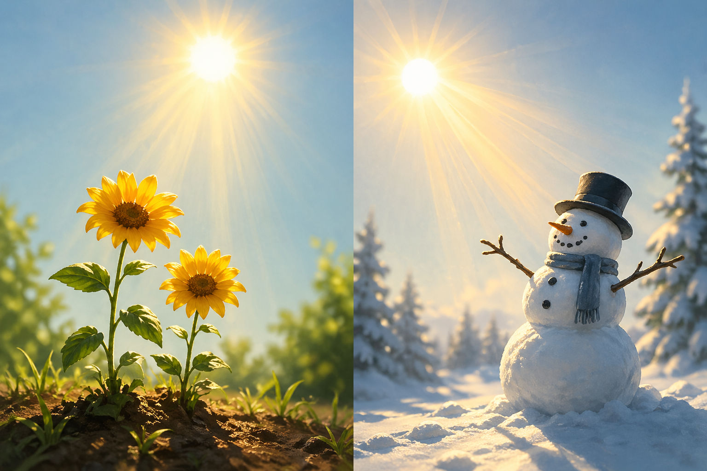
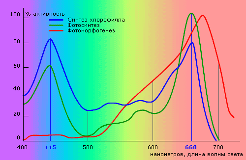

В этом материале мы постараемся объяснить основные термины, которые полезно знать всем, кто использует лампы для растений, и объясним, чем отличается качественная фитолампа.
Основные термины

Часто неспециалисты путают люмены и люксы. Это две различные единицы измерения, использующиеся для определения светового потока (люмен) и освещённости (люкс).
Отметим также, что электрическая мощность лампочки обычно измеряется в ватах в час. Световой поток, который при определённой мощности обеспечивает лампа, характеризуется в люменах (Лм). Количество люменов в характеристиках лампы прямо пропорционально свету, который даёт эта лампа. Можно провести аналогию со шлангом для полива растений: как шланг с широко открытым краном даст больше воды, так и лампа с высоким показателем в люменах даст больше света. Получается, что световой поток (Лм) характеризует сам источник света (лампочку).
А вот освещённость — это характеристика той поверхности, на которую этот свет падает. Если продолжить аналогию со шлангом, то насколько почва становится влажной. Освещённость поверхности меряют в люксах (Лк). Лампа, дающая световой поток в 1 Лм создаст на 1 кв.м поверхности, находящейся в 1 м от лампы, освещённость в 1 Лк.
Рекомендации
Квадрат расстояния
Понятно, что чем дальше лампа от поверхности, тем меньше света на поверхности. Но зависимость эта не прямая. Освещённость обратно пропорциональна квадрату расстояния от источника света. Если вы приблизите растение к лампе в два раза ближе, освещённость растения вырастет не в два, а в четыре раза. Обдумывая взаимное расположение растений и ламп, не забывайте об этом.
Угол падения света

В полдень летом солнце всегда светит светлее, чем вечером, когда солнце ближе к горизонту и лучи падают на землю под углом. Так же и в случае с фитолампами освещённость падает, если свет направлен под углом к растению. Старайтесь, чтобы свет падал на растения под прямым углом, перпендикулярно.
Спектр свечения лампы
Растения используют для жизни удивительный, чрезвычайно сложный и эффективный процесс хлорофилльного фотосинтеза. В ходе фотосинтеза происходит захват фотонов (квантов света) специально предназначенными для этого фотосинтетическими пигментами растения. Растение применяет энергию света, превращая её в органические соединения, благодаря которым оно может жить и расти. При этом растение помимо света вбирает из воздуха углекислый газ и выделяет кислород, ключевой элемент, жизненно необходимый животным и людям.
Не весь спектр видимого света одинаково способствует фотосинтезу, что было установлено и доказано учёными. Лучшему пониманию процессу фотосинтеза и спектра поглощаемого растением света способствовал выдающийся русский учёный-биолог Климент Аркадьевич Тимирязев. Фотосинтетические пигменты (хлорофилл и каротиноиды) в растении в результате длительной эволюции приспособились поглощать в основном синий и красный свет спектра. Первые организмы, использовавшие процесс фотосинтеза, появились на Земле более 2,5 миллиардов лет назад.

Пигменты, наиболее чувствительные к свету красной области спектра, ассоциируются с развитием корневой системы растения, образованием цветов, вызреванием плодов. Пигменты с высоким светопоглощением в синем диапазоне спектра связаны с вегетацией, развитием листьев и общим ростом растения. Растения, которым не хватает синего света, приобретают непропорциональную, вытянутую форму. Например, растения, выросшие под лампой накаливания, часто неестественно длинные, они как бы тянутся вверх, стремясь получить больше синего света. Пигмент, который помогает растению правильно ориентироваться по направлению к свету, также имеет высокую чувствительность к синим лучам.
Поэтому лампа, предназначенная для освещения растений, должна излучать свет как в синем, так и в красном спектре. В нашем магазине вы найдёте светодиодные фитолампочки со спектром, специально оптимизированным для освещения растений. Они полезнее для растений, чем обычные люминесцентные или бытовые светодиодные лампы, используемые для освещения помещений. При значительно меньшей потребляемой мощности специальная фитолампа даёт гораздо больше «полезного» для растений света и обходится дешевле.